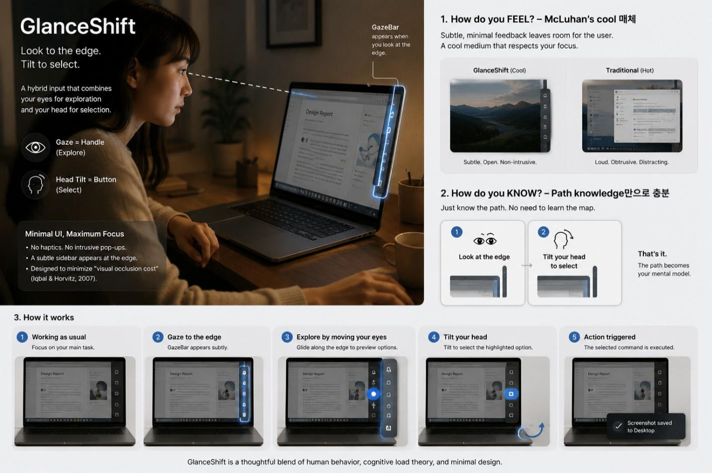
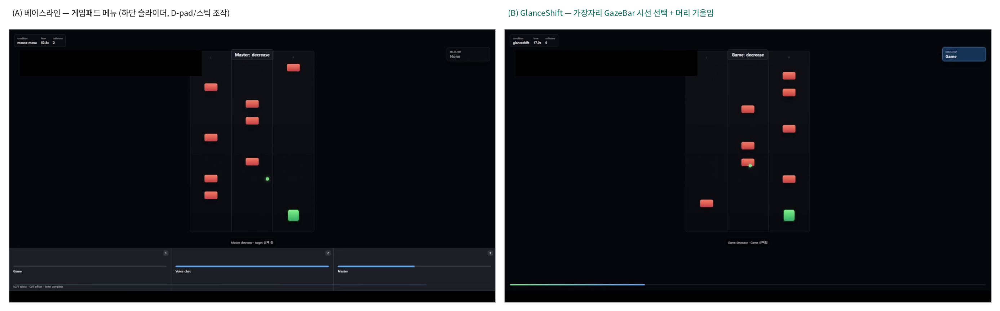
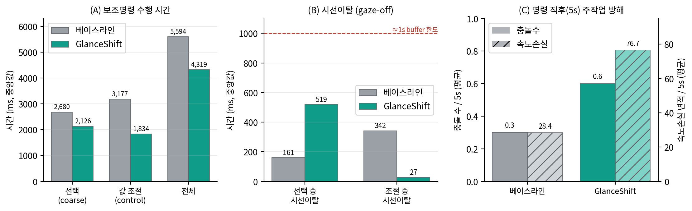
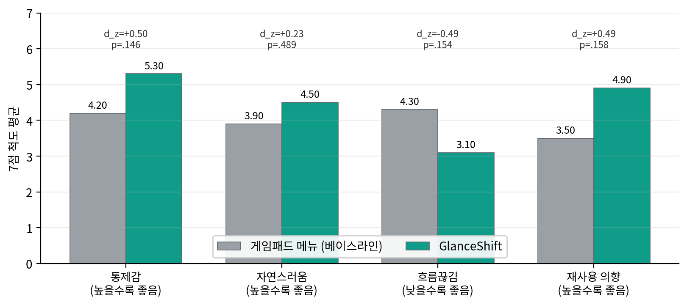

Hard Interruption을 Soft Interruption으로 변환하는
보조 명령 인터랙션의 설계와 파일럿 검증
Gaze + Head Tilt for Hands-Busy Secondary Commands
경희대학교 소프트웨어융합학과 · SWCON312 게임 인터랙티브 테크놀로지

Abstract
보조 명령은 어떤 자원 채널을 차용하느냐에 따라 주작업 방해의 질이 달라진다. 본 연구는 손의 운동 자원을 차용하는 hard interruption을, 시선의 시각 자원을 차용하는 soft interruption으로 변환하는 보조 명령 인터랙션 GlanceShift를 제안한다. 시선을 거친 위치 지정(coarse target designation) 채널로, 머리 기울임을 확정 및 rate-control 채널로 분리 할당하여, 손을 컨트롤러에서 떼지 않고 화면 가장자리의 GazeBar로 보조 명령을 수행한다.
일시정지가 불가능한 실시간 게임 맥락에서, 손은 유지하되 엄지가 메뉴에 점유되는 게임패드 메뉴를 베이스라인으로 두고 within-subjects 파일럿 실험을 수행했다(주관 설문 10명, 행동 로그 단일 참가자 60 trial). 주관 설문 네 문항이 모두 GlanceShift에 우호적이었고, 보조 명령 수행은 더 빨랐으며, 조절 단계의 시선이탈은 27 ms로 시각 차용이 oculomotor buffer 한도 안에 머물렀다. 소표본으로 통계적 유의에는 이르지 못했으나 네 갈래의 독립적 증거가 한 방향으로 수렴했다.
Core Idea
보조 명령의 진짜 비용은 수행 시간이 아니라 주작업 연속성의 손실이다. 손과 시각은 똑같이 잠깐 빌려 쓰더라도 그 차용을 견디고 회복하는 능력이 본질적으로 다르다.
시각 = 버퍼가 있는 채널
처리된 시각 정보는 약 1초의 oculomotor buffer에 유지된다. 잠깐 시선을 빌려도 버퍼가 흡수해 주작업이 회복된다 → soft.
손 = 버퍼가 없는 채널
컨트롤러에서 손을 떼는 순간 efference copy가 끊겨 control loop가 즉시 중단된다. 버퍼가 없어 차용 즉시 손상 → hard.
GlanceShift는 손이 차지하던 명령을 시선이 잠깐 차용하는 명령으로 옮기고, 다중자원이론의 "자원 분리"를 한 걸음 더 밀어 회복 능력의 비대칭(interruption resilience)이라는 평가 축으로 정식화한다.
How It Works
① 시선 = 거친 위치 지정 (Handle)
화면 가장자리를 바라보면 GazeBar가 떠오른다. 시선은 정밀 제어가 아니라 거친 지정에만 쓰여 Midas touch와 정확도 손실을 피한다.
② 머리 기울임 = 확정·조절 (Button)
고개를 기울인 방향·시간만큼 값이 변하는 rate-control 방식. 절대 각도를 맞춰 유지할 필요가 없어, 조절 내내 시선을 화면에 둔 채 eyes-free로 조작한다.
③ 스프링 조이스틱
중립으로 돌아오면 멈추는 rate-control. 중간발표 피드백을 반영해 절대 위치 매핑에서 전환했고, 그 결과 조절 중 시선이탈이 27 ms까지 줄었다.
④ 비대칭 히스테리시스
진입은 엄격하게, 이탈은 관대하게. 자연스러운 시선 이동이 명령을 오발동시키는 것과 조절 중 조기 취소되는 것을 동시에 억제한다.
Demo
Experiment

메인 과제는 캐릭터가 자동 전진하며 좌우로 장애물을 피하는 연속 회피 runner다. run 시작 후 10·30·50초에 game / voice / master 세 채널의 볼륨 조절 프롬프트를 띄우고, 그 직후 5초 구간에서 충돌과 속도손실을 측정해 명령 수행이 주작업을 방해하는 정도를 비교했다. 베이스라인은 손을 떼는 방식이 아니라 엄지가 점유되는 게임패드 메뉴로 잡아 공정한 비교를 만들었다.
Results


| 문항 | 베이스라인 | GlanceShift | diff | p | dz |
|---|---|---|---|---|---|
| 통제감 (↑) | 4.20 | 5.30 | +1.10 | .146 | 0.50 |
| 자연스러움 (↑) | 3.90 | 4.50 | +0.60 | .489 | 0.23 |
| 흐름끊김 (↓) | 4.30 | 3.10 | −1.20 | .154 | −0.49 |
| 재사용 의향 (↑) | 3.50 | 4.90 | +1.40 | .158 | 0.49 |
모든 문항의 방향이 GlanceShift에 우호적이며 통제감·재사용·흐름끊김의 효과크기는 중간(|dz|≈0.5) 수준이다. 소표본(n=10)이라 α=.05 유의에는 이르지 못했으나, "차이가 없다"가 아니라 "이 표본으로는 단정 못 한다"로 읽어야 한다.
Honest Reading
본 연구의 기여는 GlanceShift의 우월성을 입증한 데 있지 않다. GlanceShift는 더 빠르고 주관적으로 선호되었으며 조절 중 시선을 거의 빼앗지 않았지만, 현재 구현의 객관적 정확도·안정성은 베이스라인보다 낮았다 (명령 직후 충돌·속도손실이 오히려 컸고 성공률 80% vs 93%).
다만 그 실패는 기술 전반이 아니라 특정 지점에 집중되었다 — 미완료 6건 중 5건이 화면 중앙의 voice 채널을 올리는 명령으로, 장애물을 피하느라 아래로 향하는 시선과 충돌하기 쉬운 곳이다. 즉 원리 자체의 한계가 아니라 특정 채널의 방향 매핑과 트리거 임계값이라는 설계 변수의 문제이며, 개선 여지가 명확하다.
@misc{glanceshift2026,
title = {GlanceShift: Hard Interruption을 Soft Interruption으로
변환하는 보조 명령 인터랙션의 설계와 파일럿 검증},
author = {박예서 and 안병하 and 신지훈 and 전윤민},
year = {2026},
note = {SWCON312 게임 인터랙티브 테크놀로지, 경희대학교 소프트웨어융합학과},
url = {https://github.com/ThisIsSimple/glanceshift}
}